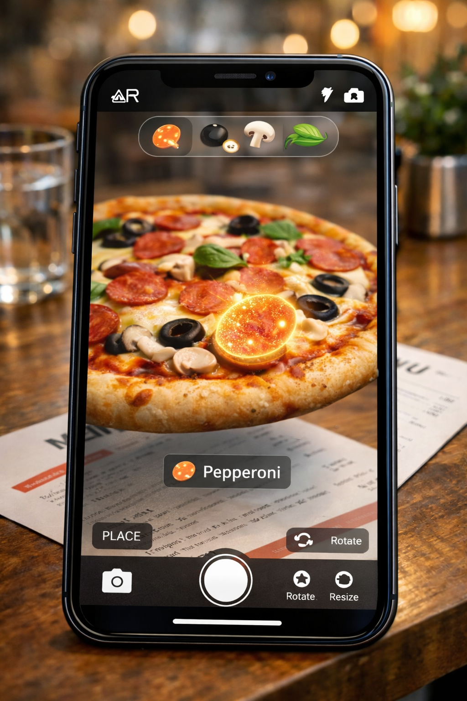
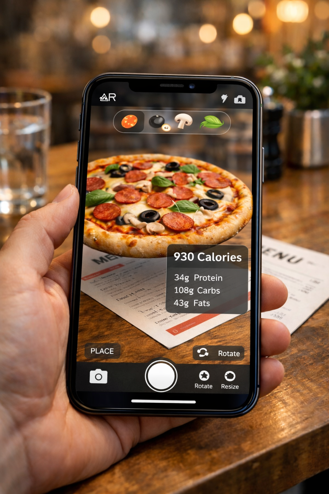

🍕 Iteration 2 — Structuring the AR Pizza Experience¶
Author: Srishti Garg
Date: February 15, 2026
📌 Continuing From the Previous Blog¶
In my last blog, I explained the overall concept of the Interactive Marker-Based AR Pizza Menu System — how scanning a printed menu displays a 3D pizza in augmented reality, allowing users to explore ingredients, nutrition, and portion sizes.
At that stage, the idea was clear.
But while working on the implementation, I realized something important:
Designing an AR experience is not just about rendering a 3D model.
It’s about defining interaction flow, stability, and structure.
This blog documents what I am refining while actively building the system.
🧠 Rethinking the User Flow¶
While developing the Unity scene, I asked myself:
- What exactly happens after scanning?
- Does the scene reload every time?
- Should users rescan to switch pizzas?
- How do I prevent tracking loss?
These questions forced me to move from “feature thinking” to “system thinking.”
🔄 Defining Scene Persistence¶
One major refinement I am currently implementing is persistent scene behavior.
Earlier, I only focused on:
- Detect marker
- Show pizza
Now, I am structuring it as:
- Detect marker
- Initialize AR scene once
- Keep scene active
- Swap pizza models dynamically
- Maintain same anchor position
This ensures:
- No repeated scanning
- No scene reload
- Stable user experience
🏗 Refining the Interaction Model¶
Instead of loading separate scenes for each pizza, I am now using:
- Runtime prefab swapping
- Fixed anchor position
- Constant scale reference
- UI-driven interaction
This keeps:
- Spatial consistency
- Orientation stable
- User experience smooth
It also makes the system technically cleaner.
🧩 Improving Ingredient Interaction¶
While testing the topping selection feature, I realized that simply displaying text was not enough.
Now I am refining:
- Highlight shader effect on selected topping
- Floating info panel near pizza
- Clear UI hierarchy to avoid clutter
This transforms the system from “visual demo” into an interactive exploration tool.

📊 Nutrition Toggle Optimization¶
The nutrition panel previously appeared abruptly.
Now I am adjusting:
- Smooth fade animation
- Toggle state memory
- Positioning logic to avoid overlapping with model
This improves usability and reduces visual overload.

🎯 Technical Refinement in Progress¶
Currently working on:
- Improving marker detection stability in Vuforia
- Testing lighting variation performance
- Adjusting 3D model optimization
- Reducing unnecessary object instantiation
- Ensuring frame rate stability
This phase is less visible to users but critical for system robustness.
💡 Key Realization During Development¶
While building this second phase, I’ve realized:
AR projects fail not because of missing features —
but because of unstable structure.
Even a simple marker-based system becomes strong when:
- Scene logic is clear
- Interaction flow is intentional
- State management is controlled
- UI supports immersion
This blog marks the transition from idea to engineering refinement.